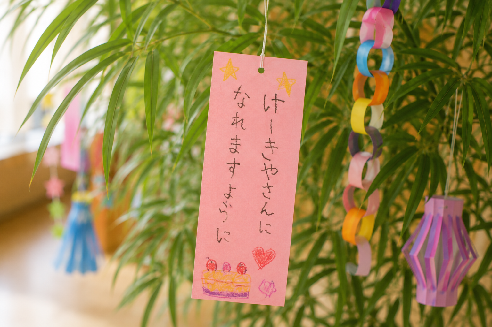
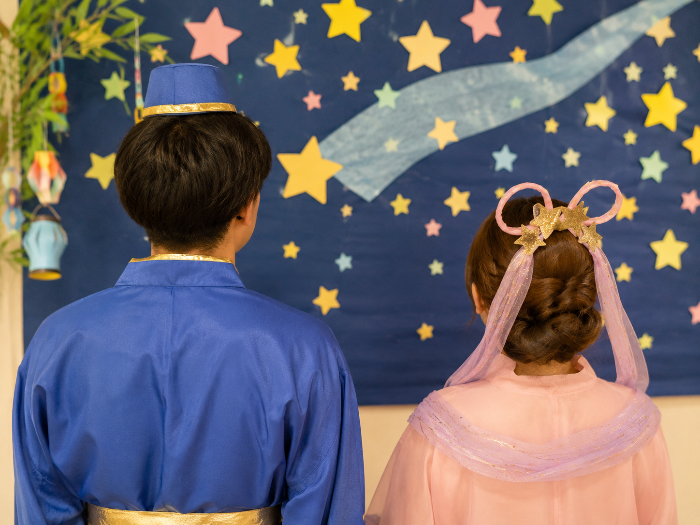
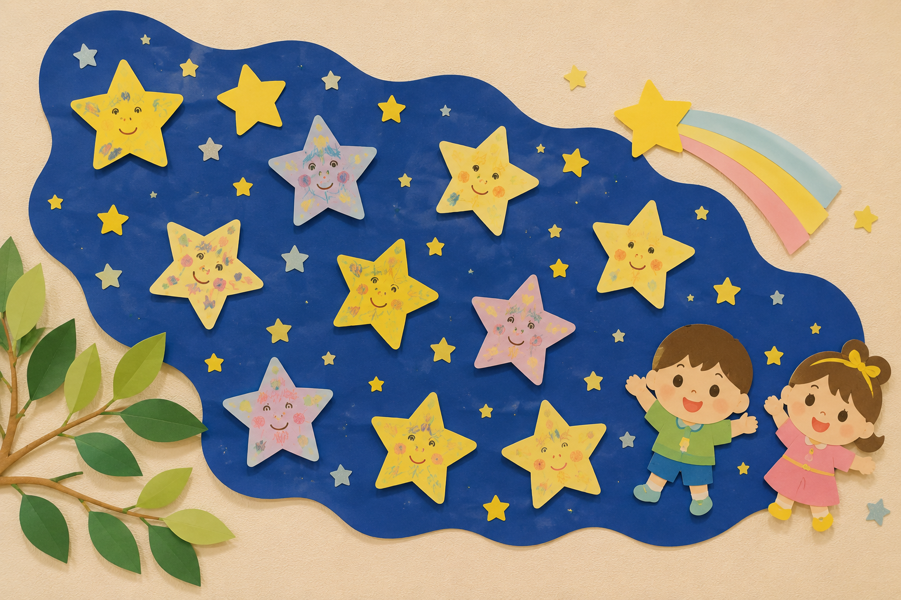
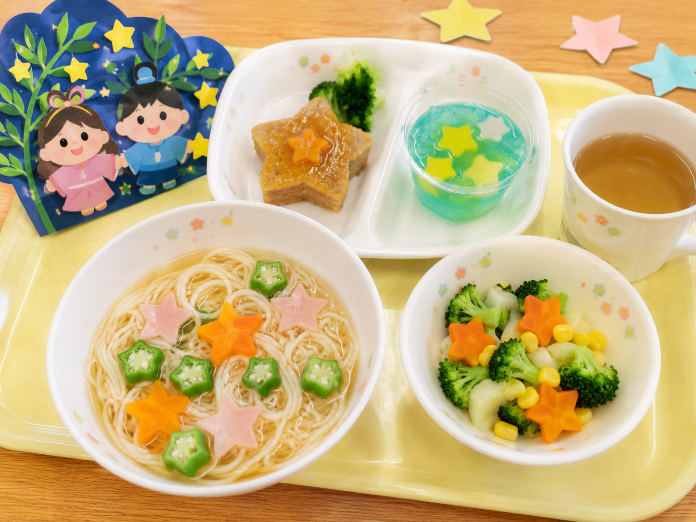

七夕会をしました✨

七夕会をしました！
みんなで飾った短冊には
それぞれ可愛らしいお願い事が…♡



そして七夕会にはなんと、彦星様と織姫様が遊びに来てくれました！
彦星様と織姫様を前に最初はちょっぴり緊張気味な子どもたちでしたが、
質問コーナーでは大きいクラスのお友達を中心に、大きな声で質問する姿もありました！
とても楽しい会になりましたよ♪
みんなのお願い事が叶いますように…☆彡